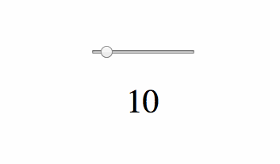

Introducing Idyll
Idyll is a tool that makes it easier to author interactive narratives for the web. The goal of the project is to provide a friendly markup language — and an associated toolchain — that can be used to create dynamic, text-driven web pages.
Idyll lowers the barrier to entry for individuals to create documents that use common narrative techniques such as embedding interactive charts and graphs, responding to scroll events, and explorable explanations. Additionally, its readable format facilitates collaboration between writers, editors, designers, and programmers on complex projects.
Check out some articles create with Idyll:
- The Etymology of Trig Functions - https://mathisonian.github.io/trig/etymology/
- Seattle PD’s Dashcam Problem - https://mathisonian.github.io/dashcam/
- United Complaints of America - https://mathisonian.github.io/consumer-complaints/
- A Scrolling Introduction to Idyll - https://idyll-lang.github.io/idyll/scroll/
# Idyll
This is *Idyll* markup. By default, everything is text,
using some common markdown syntax.
But you can include custom JavaScript components inline:
[DynamicComponent property:"value" /]
The project is inspired by markdown, and
supports a subset of commonly used markdown
syntax, for example using a # pound sign
to denote headers, using three backticks to
display code, and using stars to display inline bold and italics.
It is built on top of React, taking advantage of the one-way data binding pattern to make it easy to create custom JavaScript components that act as first class elements in the markup. Idyll also makes it easy to create data-driven articles,
[data name:"cooldataset" src:"cooldata.json" /]
Check out this chart:
[Chart data:cooldataset type:"line" /]

and handles variable binding for you
[var name:"myVar" value:10 /]
[Range value:myVar min:0 max:100 /]
[DisplayVar var:myVar /]

Continue to the next section for more details.